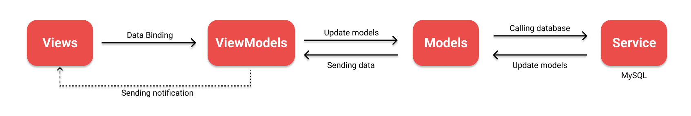

This post is still in building !
Context
In the second semester of my first year in engineering we had database and interoperability course, for the evaluation we had to develop a CRUD application using C# and a MySQL database.
We were in a team of 3, all of us were mainly on a linux distribution so we could not use WPF, we chose instead Avalonia, a WPF alternative for cross-platform desktop app.
Other preview

MVVM design pattern
We had to implement the MVVM pattern since we were using Avalonia : 
Functionnalities implemented
- Home page with dashboard
- Search bar for any table
- Add/Update/Delete bikes
- Add/Update/Delete parts
- Add/Update/Delete clients